CODING AGENTS AS PIXEL WORLD MODELS
traex/GPT-6.1-Sol · 0070
点击播放 · 原生 RGB 像素
逐轮保存的候选
回放视频、检查图与代码变化。
每份候选均可单独播放。实际图片检查记录在下方工具轨迹中。
候选 01播放与检查图
点击播放 · 原生 RGB 像素
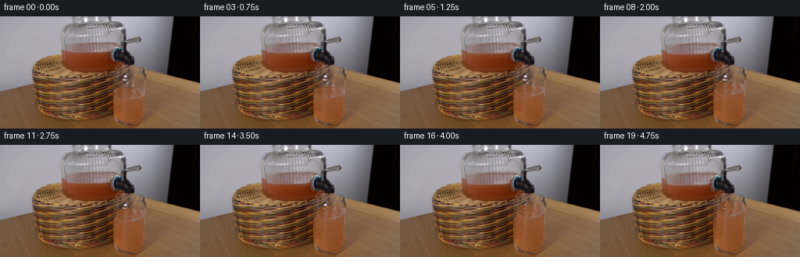
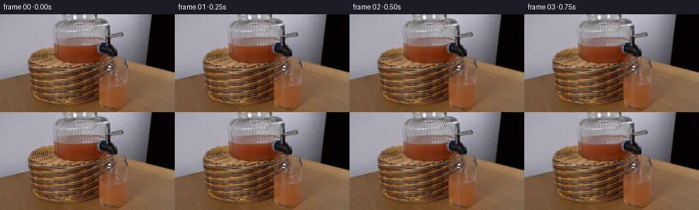
展开代码变化
--- 上一保存版本
+++ 本次保存版本
@@ -0,0 +1,119 @@
+from pathlib import Path
+import numpy as np
+from PIL import Image
+from scipy.ndimage import map_coordinates, gaussian_filter
+import artifact_io
+
+ROOT=Path(__file__).resolve().parent
+W,H,S=256,144,4
+base=np.asarray(Image.open(ROOT/'first_frame.png').convert('RGB'),dtype=np.float64)
+y,x=np.mgrid[0:H*S,0:W*S].astype(float)
+x=(x+.5)/S-.5; y=(y+.5)/S-.5
+
+def sample(sx,sy):
+ return np.stack([map_coordinates(base[:,:,k],[sy,sx],order=1,mode='nearest') for k in range(3)],axis=-1)
+orig=sample(x,y)
+def smooth(a):
+ a=np.clip(a,0,1); return a*a*(3-2*a)
+def between(v,low,high,soft=.6):
+ return smooth((v-low)/soft)*smooth((high-v)/soft)
+
+# Photographic liquid body is advected inside the fixed glass, not the scene.
+# Dimensions are in image coordinates.
+oldc=165.0; oldrx=20.0; oldcy=98.9; oldry=6.0
+bottom=135.5
+
+def make_frame(i):
+ if i==0:return base.astype(np.uint8)
+ t=i/4
+ rise=22.0*(t/4.75)
+ cy=oldcy-rise
+ left=145.0+max(0,94-cy)*.255
+ right=185.0+max(0,94-cy)*.063
+ cx=(left+right)/2; rx=(right-left)/2
+ ry=5.8-.6*rise/22
+ # Sub-pixel disturbances of the surface from the continuously falling jet.
+ q=(x-cx)/rx
+ root=np.sqrt(np.maximum(0,1-q*q))
+ wave=.19*np.sin(7*t+q*7)+.11*np.sin(12*t-q*9)
+ top=cy-ry*root+wave
+ oldq=(x-oldc)/oldrx
+ oldroot=np.sqrt(np.maximum(0,1-oldq*oldq))
+ oldtop=oldcy-oldry*oldroot
+ # Map surface ellipse as well as body to the original glass liquid.
+ depth=np.clip((y-top)/(bottom-top),0,1)
+ sx=x+(oldc+(x-cx)*oldrx/rx-x)*(1-depth)**1.4
+ sq=(sx-oldc)/oldrx
+ source_top=oldcy-oldry*np.sqrt(np.maximum(0,1-sq*sq))
+ sy=source_top+(y-top)*(bottom-source_top)/(bottom-top)
+ # A weak flow displacement under the impact avoids a frozen ripple pattern.
+ near_surface=np.exp(-((y-cy)/6)**2)
+ sx+=.18*np.sin(t*13+(y-cy)*.5)*near_surface*np.exp(-((x-170)/10)**2)
+ sy+=.20*np.sin(t*9+(x-cx)*.55)*near_surface
+ filled=sample(sx,sy)
+ # Preserve the physical stationary walls and base of the tumbler.
+ xl=np.interp(y,[62,72,80,90,96,126,133,138],[154,152,149.6,146.6,145,145,149,161])
+ xr=np.interp(y,[62,70,78,99,127,134,138],[179,185,186.7,185.1,183.7,179,169])
+ inside=between(x,xl+.7,xr-.7,1.1)*between(y,65.5,135.4,1.4)
+ fluid=smooth((y-top+.3)/.75)*smooth((1-np.abs(q))*rx/.7)
+ # Widen mask below surface to keep the original glass outline intact.
+ fluid=np.where(y>cy+ry+1,smooth((y-top+.3)/.75),fluid)
+ mask=inside*fluid
+ im=orig*(1-mask[...,None])+filled*mask[...,None]
+
+ # Unchanged glass side reflections are thin and soft, so the photographic
+ # source refraction persists, while newly wet regions become opaque.
+ # Surface rings and a small bubble train around the jet strike.
+ ex=(x-cx)/rx
+ rr=np.sqrt(np.maximum(0,1-ex*ex))
+ front=cy+ry*rr+wave
+ edge=np.exp(-((y-front)/.32)**2)*between(x,left+1,right-1,.7)
+ edge*=.16+.10*np.sin(x*.8+t*5)**2
+ im=im*(1-edge[...,None])+np.array([176,145,114])*edge[...,None]
+ # Impact causes low relief capillary waves on the horizontal liquid surface.
+ impactx=169.0+.055*(cy-61)
+ impacty=cy+.5
+ rad=np.sqrt(((x-impactx)/1.0)**2+((y-impacty)/.34)**2)
+ band=np.exp(-((rad-(2.1+(t*6)%3.8))/.36)**2)
+ band*=np.exp(-rad/7)*.20*inside*between(y,top,front,.45)
+ im=im*(1-band[...,None])+np.array([188,150,115])*band[...,None]
+ # A few tiny airy bubbles carried on the juice rather than a foamy layer.
+ bubble=np.zeros(x.shape)
+ for j in range(11):
+ bx=impactx+np.sin(j*2.23+t*.85)*(2.0+j*.42)
+ by=cy+1.0+((j*1.71+t*2.0)%4.3)
+ r=.19+.11*((j*7)%5)/4
+ b=np.exp(-(((x-bx)/r)**2+((y-by)/(r*.60))**2)*1.3)
+ bubble=np.maximum(bubble,b*.42)
+ bubble*=inside*between(y,top,front+.3,.3)
+ im=im*(1-bubble[...,None])+np.array([196,166,134])*bubble[...,None]
+
+ # The existing thin stream is continuously refracted and perturbed while its
+ # nozzle stays still. Submerged portions are replaced by the rising liquid.
+ streamx=168.65+.044*(y-62)+.0008*(y-62)**2
+ stmask=np.exp(-((x-streamx)/1.55)**4)*between(y,61.5,top+1,.8)
+ dx=.24*np.sin(t*17-y*.48)+.11*np.sin(t*31-y*.91)
+ jet=sample(x-dx,y+.25*np.sin(t*24-y*.9))
+ jet+=np.sin(y*1.7-t*22)[...,None]*np.array([2.1,1.7,1.2])
+ im=im*(1-stmask[...,None])+jet*stmask[...,None]
+
+ # Falling reservoir level: the jar is wider so its drop is ~1/4 of the rise.
+ drop=rise*.255
+ syp=np.where(y<45+drop,27+(y-27)*18/(18+drop),68-(68-y)*23/(23-drop))
+ jar=sample(x,syp)
+ jl=np.interp(y,[26,34,42,58,64,68],[79.7,80.3,81.7,83.3,87,96])
+ jr=np.interp(y,[26,40,58,64,68],[157,157,155,151,142])
+ jm=between(x,jl+1,jr-1,1.5)*between(y,27.5,68,2)
+ # Metal spigot and the rubber gasket occlude the jar.
+ gasket=((x-150.0)/9.3)**2+((y-48.5)/10.4)**2
+ jm*=smooth((gasket-1)/.22)
+ jm*=1-smooth((x-146)/1.0)*smooth((y-48)/1.0)
+ im=im*(1-jm[...,None])+jar*jm[...,None]
+ delta=im-orig
+ # Area average the local alterations only; every static pixel stays exact.
+ reduced=delta.reshape(H,S,W,S,3).mean(axis=(1,3))
+ return np.clip(np.rint(base+reduced),0,255).astype(np.uint8)
+
+if __name__=='__main__':
+ frames=np.stack([make_frame(i) for i in range(20)])
+ artifact_io.save(frames,ROOT)
候选 02播放与检查图
点击播放 · 原生 RGB 像素
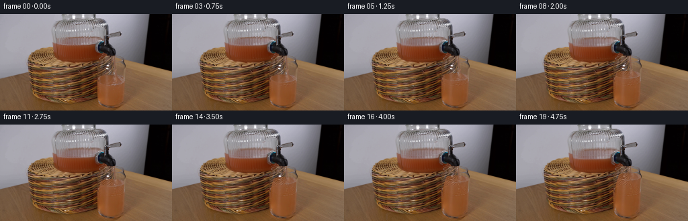
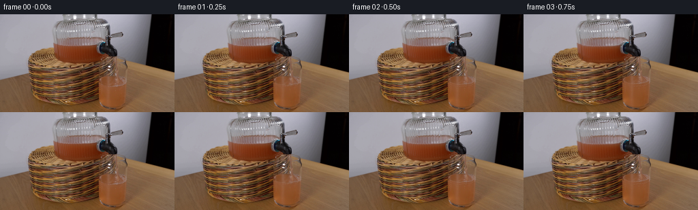
展开代码变化
--- 上一保存版本
+++ 本次保存版本
@@ -45,12 +45,23 @@
sx=x+(oldc+(x-cx)*oldrx/rx-x)*(1-depth)**1.4
sq=(sx-oldc)/oldrx
source_top=oldcy-oldry*np.sqrt(np.maximum(0,1-sq*sq))
- sy=source_top+(y-top)*(bottom-source_top)/(bottom-top)
- # A weak flow displacement under the impact avoids a frozen ripple pattern.
- near_surface=np.exp(-((y-cy)/6)**2)
+ # Keep the projected depth of the ellipse fixed rather than stretching its
+ # basket reflections vertically when the vessel fills.
+ front0=oldcy+oldry*np.sqrt(np.maximum(0,1-sq*sq))
+ surface_front=cy+ry*root+wave
+ surfy=oldcy+(y-cy-wave)*oldry/ry
+ bodysy=front0+1+(y-surface_front)*(bottom-front0-1)/(bottom-surface_front)
+ sy=np.where(y<surface_front,surfy,bodysy)
+ near_surface=np.exp(-((y-cy)/4)**2)
sx+=.18*np.sin(t*13+(y-cy)*.5)*near_surface*np.exp(-((x-170)/10)**2)
- sy+=.20*np.sin(t*9+(x-cx)*.55)*near_surface
+ sy+=.16*np.sin(t*9+(x-cx)*.55)*near_surface
filled=sample(sx,sy)
+ # With continued pouring, the surface grows more homogeneous as orange
+ # pulp mixes with the initial water. Retain softened photographic texture.
+ surface_area=between(y,top,surface_front,.5)
+ homogenize=surface_area*.28*(rise/22)
+ color=np.stack([140.0+(x-160)*.19,86.0+(x-160)*.19,53.0+(x-160)*.21],axis=-1)
+ filled=filled*(1-homogenize[...,None])+color*homogenize[...,None]
# Preserve the physical stationary walls and base of the tumbler.
xl=np.interp(y,[62,72,80,90,96,126,133,138],[154,152,149.6,146.6,145,145,149,161])
xr=np.interp(y,[62,70,78,99,127,134,138],[179,185,186.7,185.1,183.7,179,169])
候选 03播放与检查图
点击播放 · 原生 RGB 像素

展开代码变化
--- 上一保存版本
+++ 本次保存版本
@@ -56,6 +56,13 @@
sx+=.18*np.sin(t*13+(y-cy)*.5)*near_surface*np.exp(-((x-170)/10)**2)
sy+=.16*np.sin(t*9+(x-cx)*.55)*near_surface
filled=sample(sx,sy)
+ # Sample beneath the old meniscus for the new body, preventing its old
+ # surface highlights from appearing as a second liquid level.
+ clean_y=109+(y-surface_front)*(bottom-109)/(bottom-surface_front)
+ clean_x=np.clip(sx,147.4,183.0)
+ clean=sample(clean_x,clean_y)
+ bm=smooth((y-surface_front)/1.1)*min(rise/3,1)
+ filled=filled*(1-bm[...,None])+clean*bm[...,None]
# With continued pouring, the surface grows more homogeneous as orange
# pulp mixes with the initial water. Retain softened photographic texture.
surface_area=between(y,top,surface_front,.5)
候选 04播放与检查图
候选 05播放与检查图
点击播放 · 原生 RGB 像素
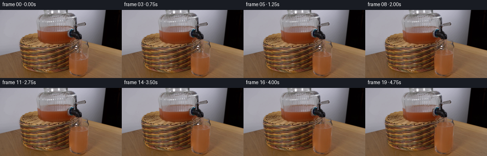
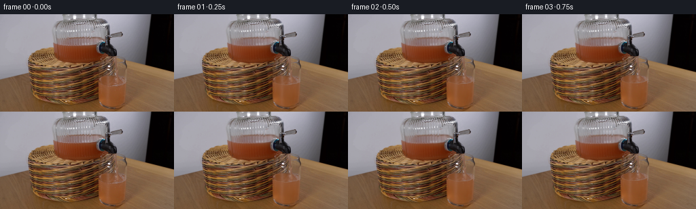
展开代码变化
--- 上一保存版本
+++ 本次保存版本
@@ -12,7 +12,7 @@
def sample(sx,sy):
return np.stack([map_coordinates(base[:,:,k],[sy,sx],order=1,mode='nearest') for k in range(3)],axis=-1)
-orig=sample(x,y)
+orig=np.repeat(np.repeat(base,S,axis=0),S,axis=1)
def smooth(a):
a=np.clip(a,0,1); return a*a*(3-2*a)
def between(v,low,high,soft=.6):
@@ -70,7 +70,7 @@
color=np.stack([140.0+(x-160)*.19,86.0+(x-160)*.19,53.0+(x-160)*.21],axis=-1)
filled=filled*(1-homogenize[...,None])+color*homogenize[...,None]
# Preserve the physical stationary walls and base of the tumbler.
- xl=np.interp(y,[62,72,80,90,96,126,133,138],[154,152,149.6,146.6,145,145,149,161])
+ xl=np.interp(y,[62,72,80,90,96,126,133,138],[151,146,145,144.8,145,145,149,161])
xr=np.interp(y,[62,70,78,99,127,134,138],[179,185,186.7,185.1,183.7,179,169])
inside=between(x,xl+.7,xr-.7,1.1)*between(y,65.5,135.4,1.4)
fluid=smooth((y-top+.3)/.75)*smooth((1-np.abs(q))*rx/.7)
可观测工具轨迹
实际执行的命令与返回图片。
命令 1exit 0
/bin/bash -lc "ls -la && cat prompt.txt && printf '\\n---RULES---\\n' && cat GENERATION_RULES.md"
命令 2exit 0
/bin/bash -lc "cat artifact_io.py && python - <<'PY'
from PIL import Image
im=Image.open('first_frame.png');print(im.size);im.resize((1024,576)).save('.tmp/large.png')
PY"命令 3exit 0
/bin/bash -lc "python - <<'PY'
from PIL import Image,ImageDraw
im=Image.open('first_frame.png').resize((1024,576))
d=ImageDraw.Draw(im)
for x in range(0,256,10):
d.line((x*4,0,x*4,575),fill=(170,50,40),width=1);d.text((x*4+1,0),str(x),fill=(255,255,255))
for y in range(0,144,10):
d.line((0,y*4,1023,y*4),fill=(170,50,40),width=1);d.text((1,y*4+1),str(y),fill=(255,255,255))
im.save('.tmp/grid.png')
im=Image.open('first_frame.png');im.crop((138,54,191,143)).resize((424,712)).save('.tmp/glass.png')
PY"命令 4exit 0
/bin/bash -lc "python - <<'PY'
from PIL import Image
im=Image.open('first_frame.png');im.crop((75,25,163,73)).resize((880,480)).save('.tmp/reservoir.png')
PY"命令 5exit 0
/bin/bash -lc "python - <<'PY'
from PIL import Image,ImageDraw
im=Image.open('first_frame.png').crop((139,60,191,142)).resize((520,820))
d=ImageDraw.Draw(im)
for x in range(140,191,5):
xx=(x-139)*10;d.line((xx,0,xx,819),fill=(220,150,150),width=1);d.text((xx+2,3),str(x),fill='white')
for y in range(60,142,5):
yy=(y-60)*10;d.line((0,yy,519,yy),fill=(220,150,150),width=1);d.text((1,yy),str(y),fill='white')
im.save('.tmp/glassgrid.png')
PY"命令 6exit 0
/bin/bash -lc "python - <<'PY'
from PIL import Image
im=Image.open('first_frame.png');im.crop((135,56,193,144)).resize((696,1056),Image.Resampling.NEAREST).save('.tmp/glass_nearest.png')
PY"命令 7exit 0
/bin/bash -lc "cat > generate.py <<'PY'
from pathlib import Path
import numpy as np
from PIL import Image
from scipy.ndimage import map_coordinates, gaussian_filter
import artifact_io
ROOT=Path(__file__).resolve().parent
W,H,S=256,144,4
base=np.asarray(Image.open(ROOT/'first_frame.png').convert('RGB'),dtype=np.float64)
y,x=np.mgrid[0:H*S,0:W*S].astype(float)
x=(x+.5)/S-.5; y=(y+.5)/S-.5
def sample(sx,sy):
return np.stack([map_coordinates(base[:,:,k],[sy,sx],order=1,mode='nearest') for k in range(3)],axis=-1)
orig=sample(x,y)
def smooth(a):
a=np.clip(a,0,1); return a*a*(3-2*a)
def between(v,low,high,soft=.6):
return smooth((v-low)/soft)*smooth((high-v)/soft)
# Photographic liquid body is advected inside the fixed glass, not the scene.
# Dimensions are in image coordinates.
oldc=165.0; oldrx=20.0; oldcy=98.9; oldry=6.0
bottom=135.5
def make_frame(i):
if i==0:return base.astype(np.uint8)
t=i/4
rise=22.0*(t/4.75)
cy=oldcy-rise
left=145.0+max(0,94-cy)*.255
right=185.0+max(0,94-cy)*.063
cx=(left+right)/2; rx=(right-left)/2
ry=5.8-.6*rise/22
# Sub-pixel disturbances of the surface from the continuously falling jet.
q=(x-cx)/rx
root=np.sqrt(np.maximum(0,1-q*q))
wave=.19*np.sin(7*t+q*7)+.11*np.sin(12*t-q*9)
top=cy-ry*root+wave
oldq=(x-oldc)/oldrx
oldroot=np.sqrt(np.maximum(0,1-oldq*oldq))
oldtop=oldcy-oldry*oldroot
# Map surface ellipse as well as body to the original glass liquid.
depth=np.clip((y-top)/(bottom-top),0,1)
sx=x+(oldc+(x-cx)*oldrx/rx-x)*(1-depth)**1.4
sq=(sx-oldc)/oldrx
source_top=oldcy-oldry*np.sqrt(np.maximum(0,1-sq*sq))
sy=source_top+(y-top)*(bottom-source_top)/(bottom-top)
# A weak flow displacement under the impact avoids a frozen ripple pattern.
near_surface=np.exp(-((y-cy)/6)**2)
sx+=.18*np.sin(t*13+(y-cy)*.5)*near_surface*np.exp(-((x-170)/10)**2)
sy+=.20*np.sin(t*9+(x-cx)*.55)*near_surface
filled=sample(sx,sy)
# Preserve the physical stationary walls and base of the tumbler.
xl=np.interp(y,[62,72,80,90,96,126,133,138],[154,152,149.6,146.6,145,145,149,161])
xr=np.interp(y,[62,70,78,99,127,134,138],[179,185,186.7,185.1,183.7,179,169])
inside=between(x,xl+.7,xr-.7,1.1)*between(y,65.5,135.4,1.4)
fluid=smooth((y-top+.3)/.75)*smooth((1-np.abs(q))*rx/.7)
# Widen mask below surface to keep the original glass outline intact.
fluid=np.where(y>cy+ry+1,smooth((y-top+.3)/.75),fluid)
mask=inside*fluid
im=orig*(1-mask[...,None])+filled*mask[...,None]
# Unchanged glass side reflections are thin and soft, so the photographic
# source refraction persists, while newly wet regions become opaque.
# Surface rings and a small bubble train around the jet strike.
ex=(x-cx)/rx
rr=np.sqrt(np.maximum(0,1-ex*ex))
front=cy+ry*rr+wave
edge=np.exp(-((y-front)/.32)**2)*between(x,left+1,right-1,.7)
edge*=.16+.10*np.sin(x*.8+t*5)**2
im=im*(1-edge[...,None])+np.array([176,145,114])*edge[...,None]
# Impact causes low relief capillary waves on the horizontal liquid surface.
impactx=169.0+.055*(cy-61)
impacty=cy+.5
rad=np.sqrt(((x-impactx)/1.0)**2+((y-impacty)/.34)**2)
band=np.exp(-((rad-(2.1+(t*6)%3.8))/.36)**2)
band*=np.exp(-rad/7)*.20*inside*between(y,top,front,.45)
im=im*(1-band[...,None])+np.array([188,150,115])*band[...,None]
# A few tiny airy bubbles carried on the juice rather than a foamy layer.
bubble=np.zeros(x.shape)
for j in range(11):
bx=impactx+np.sin(j*2.23+t*.85)*(2.0+j*.42)
by=cy+1.0+((j*1.71+t*2.0)%4.3)
r=.19+.11*((j*7)%5)/4
b=np.exp(-(((x-bx)/r)**2+((y-by)/(r*.60))**2)*1.3)
bubble=np.maximum(bubble,b*.42)
bubble*=inside*between(y,top,front+.3,.3)
im=im*(1-bubble[...,None])+np.array([196,166,134])*bubble[...,None]
# The existing thin stream is continuously refracted and perturbed while its
# nozzle stays still. Submerged portions are replaced by the rising liquid.
streamx=168.65+.044*(y-62)+.0008*(y-62)**2
stmask=np.exp(-((x-streamx)/1.55)**4)*between(y,61.5,top+1,.8)
dx=.24*np.sin(t*17-y*.48)+.11*np.sin(t*31-y*.91)
jet=sample(x-dx,y+.25*np.sin(t*24-y*.9))
jet+=np.sin(y*1.7-t*22)[...,None]*np.array([2.1,1.7,1.2])
im=im*(1-stmask[...,None])+jet*stmask[...,None]
# Falling reservoir level: the jar is wider so its drop is ~1/4 of the rise.
drop=rise*.255
syp=np.where(y<45+drop,27+(y-27)*18/(18+drop),68-(68-y)*23/(23-drop))
jar=sample(x,syp)
jl=np.interp(y,[26,34,42,58,64,68],[79.7,80.3,81.7,83.3,87,96])
jr=np.interp(y,[26,40,58,64,68],[157,157,155,151,142])
jm=between(x,jl+1,jr-1,1.5)*between(y,27.5,68,2)
# Metal spigot and the rubber gasket occlude the jar.
gasket=((x-150.0)/9.3)**2+((y-48.5)/10.4)**2
jm*=smooth((gasket-1)/.22)
jm*=1-smooth((x-146)/1.0)*smooth((y-48)/1.0)
im=im*(1-jm[...,None])+jar*jm[...,None]
delta=im-orig
# Area average the local alterations only; every static pixel stays exact.
reduced=delta.reshape(H,S,W,S,3).mean(axis=(1,3))
return np.clip(np.rint(base+reduced),0,255).astype(np.uint8)
if __name__=='__main__':
frames=np.stack([make_frame(i) for i in range(20)])
artifact_io.save(frames,ROOT)
PY
python generate.py"命令 8exit 0
/bin/bash -lc "python - <<'PY'
from PIL import Image
im=Image.open('frames/19.png');im.resize((1024,576)).save('.tmp/last_large.png');im.crop((138,54,191,143)).resize((424,712)).save('.tmp/last_glass.png')
PY"命令 9exit 0
/bin/bash -lc "python - <<'PY'
from PIL import Image
import numpy as np
im=np.asarray(Image.open('first_frame.png'))
for yy in (93,96,100,108,115,125):
print(yy,[im[yy,xx].tolist() for xx in (148,154,162,171,180,183)])
PY"命令 10exit 0
/bin/bash -lc "python - <<'PY'
from PIL import Image
import numpy as np
im=np.array(Image.open('frames/19.png'))
for yy in (78,85,93,96,100,103,108,115,125):
print(yy,[im[yy,xx].tolist() for xx in (148,154,162,171,180,183)])
PY"命令 11exit 0
/bin/bash -lc "cp generate.py .tmp/generate_v1.py
python - <<'PY'
p='generate.py'
s=open(p).read()
start=s.index(' sy=source_top+')
end=s.index(' # Preserve the physical',start)
s=s[:start]+''' # Keep the projected depth of the ellipse fixed rather than stretching its
# basket reflections vertically when the vessel fills.
front0=oldcy+oldry*np.sqrt(np.maximum(0,1-sq*sq))
surface_front=cy+ry*root+wave
surfy=oldcy+(y-cy-wave)*oldry/ry
bodysy=front0+1+(y-surface_front)*(bottom-front0-1)/(bottom-surface_front)
sy=np.where(y<surface_front,surfy,bodysy)
near_surface=np.exp(-((y-cy)/4)**2)
sx+=.18*np.sin(t*13+(y-cy)*.5)*near_surface*np.exp(-((x-170)/10)**2)
sy+=.16*np.sin(t*9+(x-cx)*.55)*near_surface
filled=sample(sx,sy)
# With continued pouring, the surface grows more homogeneous as orange
# pulp mixes with the initial water. Retain softened photographic texture.
surface_area=between(y,top,surface_front,.5)
homogenize=surface_area*.28*(rise/22)
color=np.stack([140.0+(x-160)*.19,86.0+(x-160)*.19,53.0+(x-160)*.21],axis=-1)
filled=filled*(1-homogenize[...,None])+color*homogenize[...,None]
''' +s[end:]
open(p,'w').write(s)
PY
python generate.py"命令 12exit 0
/bin/bash -lc "python - <<'PY'
from PIL import Image
im=Image.open('frames/19.png');im.crop((138,54,191,143)).resize((424,712)).save('.tmp/last_glass2.png')
im.resize((1024,576)).save('.tmp/last2.png')
PY"命令 13exit 0
/bin/bash -lc "python - <<'PY'
p='generate.py';s=open(p).read();s=s.replace(' filled=sample(sx,sy)\\n # With continued', ''' filled=sample(sx,sy)
# Sample beneath the old meniscus for the new body, preventing its old
# surface highlights from appearing as a second liquid level.
clean_y=109+(y-surface_front)*(bottom-109)/(bottom-surface_front)
clean_x=np.clip(sx,147.4,183.0)
clean=sample(clean_x,clean_y)
bm=smooth((y-surface_front)/1.1)*min(rise/3,1)
filled=filled*(1-bm[...,None])+clean*bm[...,None]
# With continued''')
open(p,'w').write(s)
PY
python generate.py"命令 14exit 0
/bin/bash -lc "python - <<'PY'
from PIL import Image
Image.open('frames/19.png').resize((1024,576)).save('.tmp/last3.png')
PY"命令 15exit 0
/bin/bash -lc "python - <<'PY'
p='generate.py';s=open(p).read().replace('orig=sample(x,y)','orig=np.repeat(np.repeat(base,S,axis=0),S,axis=1)')
s=s.replace('[154,152,149.6,146.6,145,145,149,161]','[151,146,145,144.8,145,145,149,161]')
open(p,'w').write(s)
PY
python generate.py"命令 16exit 0
/bin/bash -lc "python - <<'PY'
from PIL import Image
import numpy as np
Image.open('frames/19.png').resize((1024,576)).save('.tmp/last4.png')
a=np.array(Image.open('first_frame.png'));b=np.array(Image.open('frames/00.png'))
print('Frame zero identical:',np.array_equal(a,b))
f=np.load('pixels.npz')['pixels'];print('Tensor:',f.shape,f.dtype)
PY"视觉工具实际返回图片 1
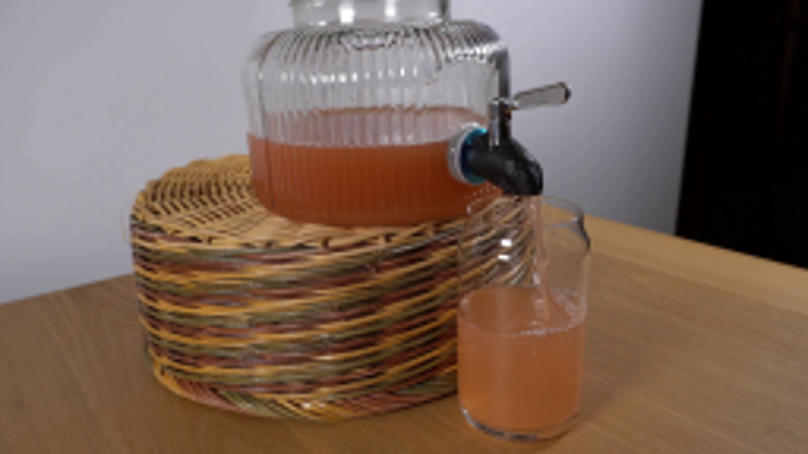
视觉工具实际返回图片 2
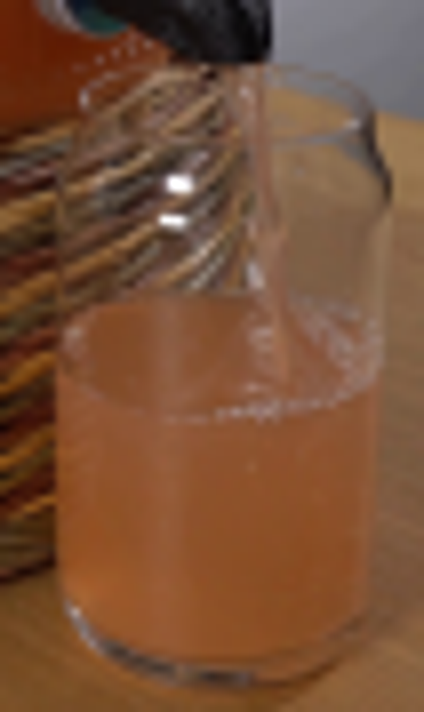
视觉工具实际返回图片 3
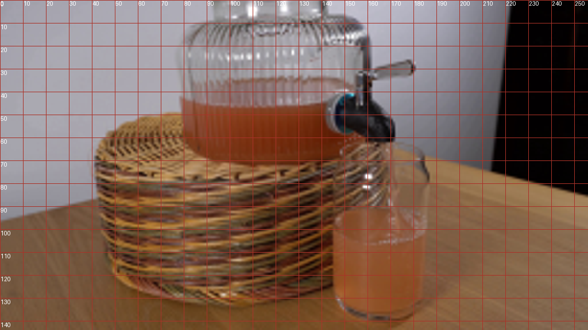
视觉工具实际返回图片 4
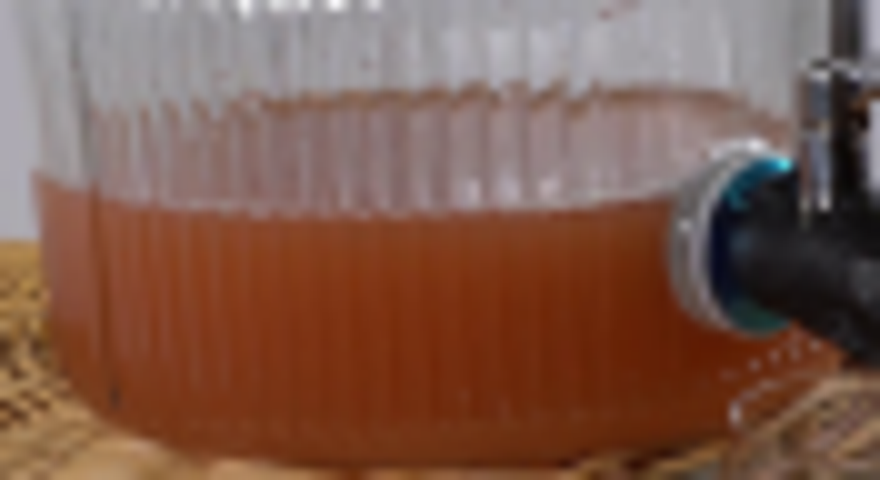
视觉工具实际返回图片 5
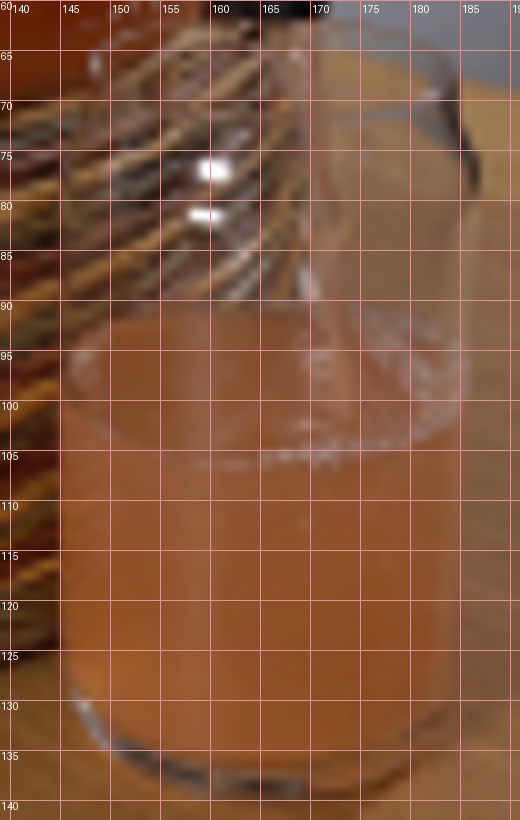
视觉工具实际返回图片 6

视觉工具实际返回图片 7
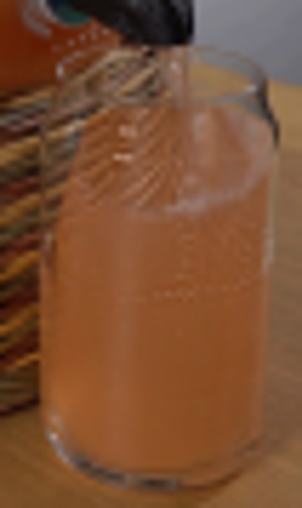
视觉工具实际返回图片 8
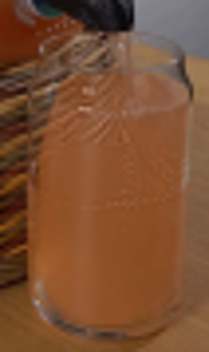
视觉工具实际返回图片 9
视觉工具实际返回图片 10
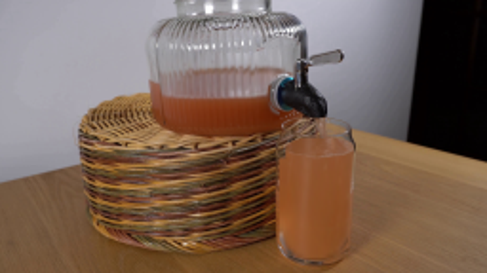
保存候选 5 份；完成命令 16 次；可验证图片返回 10 张。原始 API 响应与完整日志保留在本地。